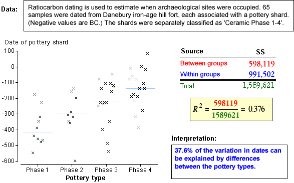

This page interprets the value of the coefficient of determination for a few real data sets. It describes the proportion of the total sum of squares that is explained by differences between the group means.

Note that
0 ≤ R2 ≤ 1
Examples

This page interprets the value of the coefficient of determination for a few real data sets. It describes the proportion of the total sum of squares that is explained by differences between the group means.

Note that
0 ≤ R2 ≤ 1
The data sets are described in the questions.